Housing resilience
Strengthen housing structures and address finance, permissions and temporary accommodation.
Climate Resilient Migrant Friendly Town
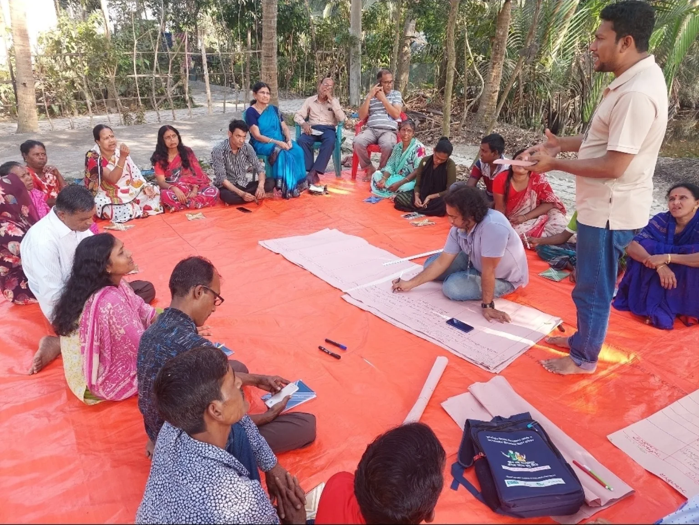
The work begins with people, a shared planning sheet and a conversation about the risks they live with.
CRMFT FIELDWORKCommunity knowledge.
Climate vulnerability.
A plan for local action.
Under the CRMFT programme, I worked across community engagement, vulnerability assessment, participatory planning, capacity building and the development process of local, ward and town climate adaptation plans across four urban locations.
Explore the programme scale ↓PROGRAMME SCALE
The Diganta Colony case is one detailed example from a much wider adaptation-planning process. Under the Climate Resilient Migrant Friendly Town programme, my work contributed to planning activities across four urban locations in Bangladesh.
Across these four locations, I was involved in the development process of:
Community evidence connected with progressively wider planning scales.
HOW THE PLANNING LEVELS CONNECT
This meant working with individual community consultations and a planning process designed to connect them with the wider urban and municipal context.
Community evidence moving upward into wider adaptation planning.
Community priorities, hazards, vulnerable sectors and locally identified interventions.
Patterns and priorities consolidated across communities at ward level.
Adaptation needs considered within the wider urban and municipal context.
MY WORK ACROSS THE PROCESS
Facilitation extended from Training of Trainers to ward-level capacity building and adaptation planning.
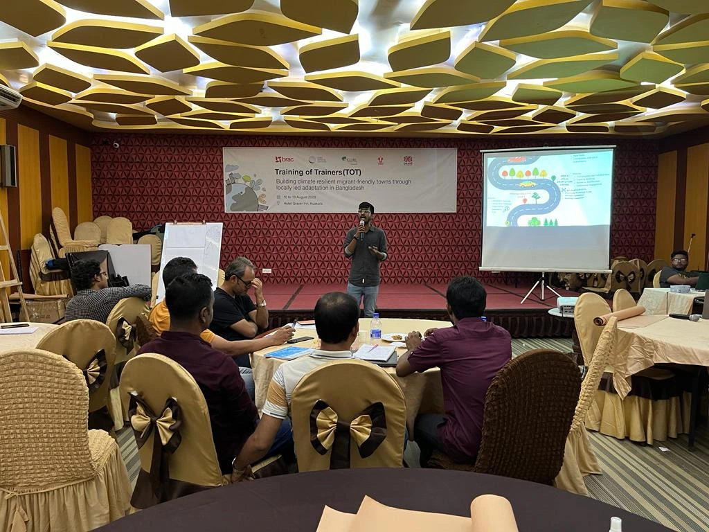
Delivering training on the CRMFT process and locally led adaptation.
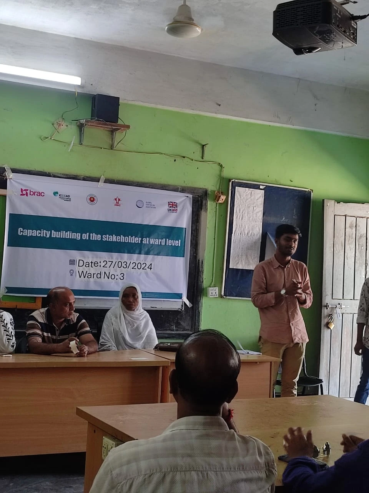
Facilitating a ward-level capacity-building session within the WCAP process.
THE CHALLENGE
Climate adaptation plans can look precise once they become reports. The difficult work happens before that: listening to residents, mapping vulnerabilities and resources, discussing possible responses, and turning those conversations into something local institutions can use.
DEEP DIVE / DIGANTA COLONY
The sections that follow use Diganta Colony in Mongla Port Municipality as a detailed example of how this process worked on the ground.
Through this one LCAP, the research-to-planning chain becomes visible. The same broader approach informed work across Mongla, Patuakhali, Kuakata and Bhola.
01 / START WITH THE PLACE
For communities in Mongla, vulnerability is shaped by the interaction of location, infrastructure, livelihoods, water access and repeated climate shocks.
The Diganta Colony plan describes a low-lying settlement where housing insecurity, limited drainage and access to safe water compound climate risks.
Ward 6 · Mongla Port Municipality
Bagerhat, Bangladesh
A map provides the geographic frame. The community provides the lived reality inside it.
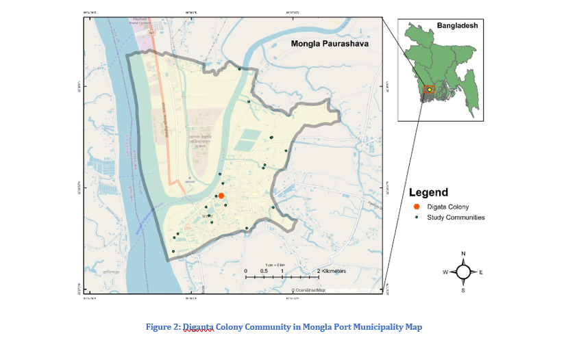
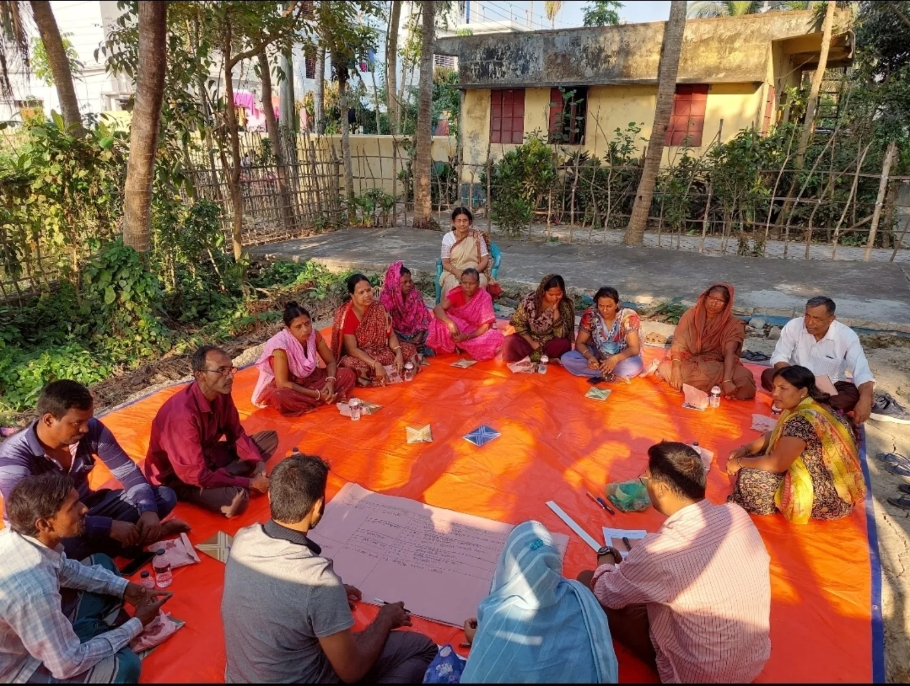
Planning discussions took place within the everyday environments that shape vulnerability.
02 / LISTEN
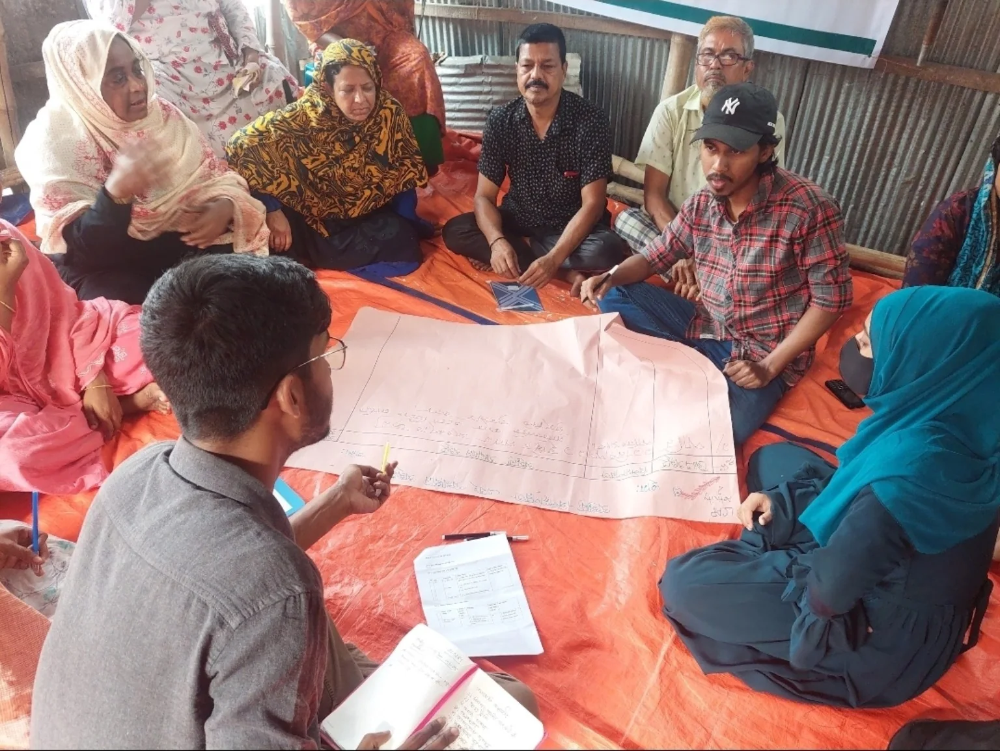
Local experience became the starting point for assessment.
Consultations explored more than which hazards existed. They asked what those hazards meant in daily life.
This created an evidence base grounded in lived experience and gave communities a role in defining the planning questions.
03 / MAKE CHANGE VISIBLE
A hazard calendar turns community memory into a shared record. Residents compared previous and current seasonal patterns, making changes in timing and duration visible.
The calendar below is the original planning evidence. It records community-reported trends at the time of the assessment.
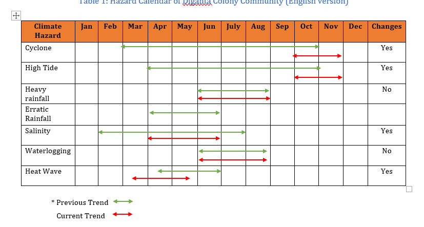
The community reported a shift toward October and November for cyclones and high tides.
The plan records a previous February–July window and a current April–June window.
Residents reported heat waves beginning earlier than the previous seasonal pattern.
04 / IDENTIFY THE HAZARD SYSTEM
The assessment moved beyond a generic description of a “climate-vulnerable” community. It identified specific hazards and connected them to the systems they disrupted.
Rainfall and inadequate drainage could intensify waterlogging. Salinity affected freshwater access. Cyclones and tidal surges threatened housing and livelihoods. Each required a different response.
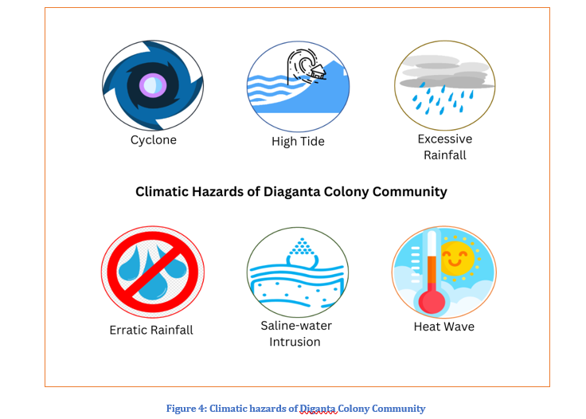
05 / UNDERSTAND WHAT IS VULNERABLE
The next step was to connect each hazard with practical consequences for housing, livestock, health, roads, drainage and water. This is where risk analysis began turning into adaptation planning.

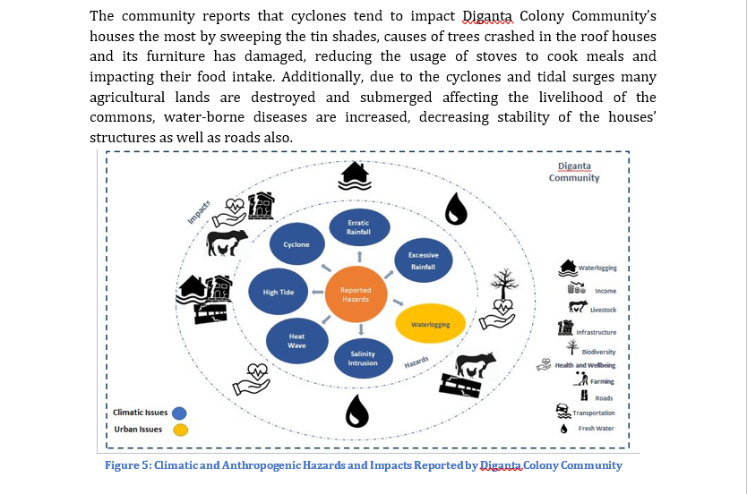
06 / CO-CREATE THE EVIDENCE
Participants discussed hazards, vulnerabilities, resources and possible responses while information was written down, reviewed and challenged collectively.
The evidence was built through interaction. Women and other community participants brought different experiences of vulnerability into the same planning process.
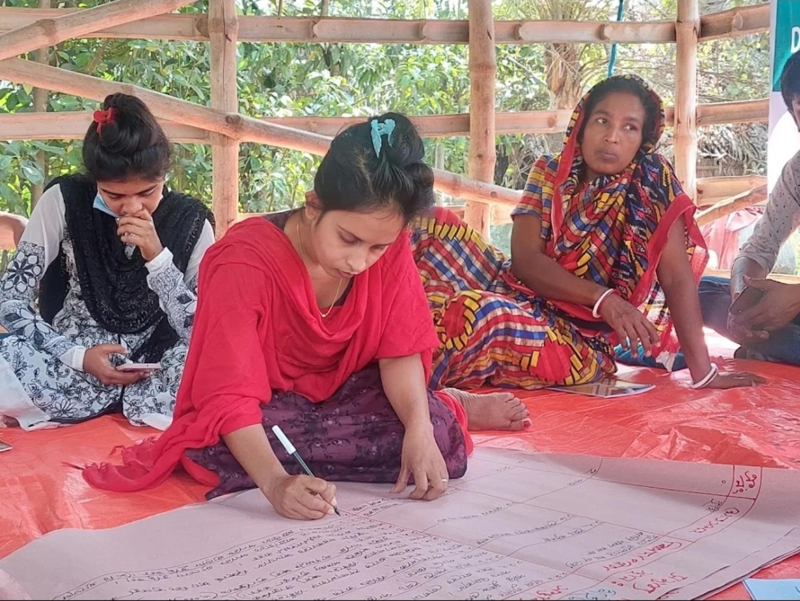
Participants put local knowledge directly onto the page.
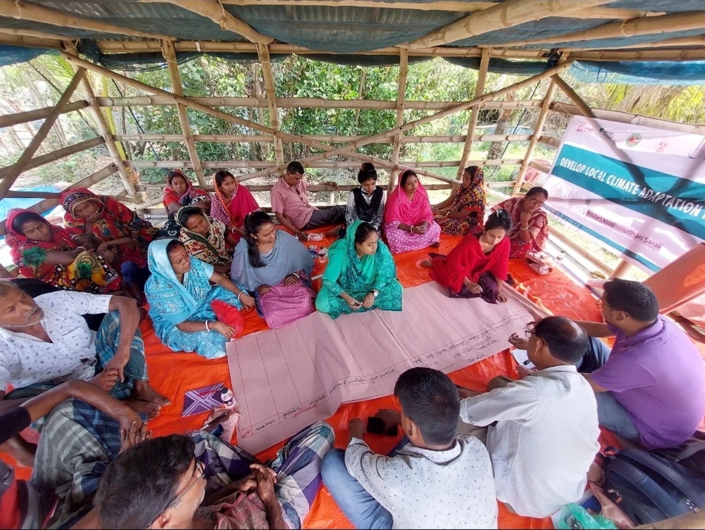
Information was reviewed and organised collectively.
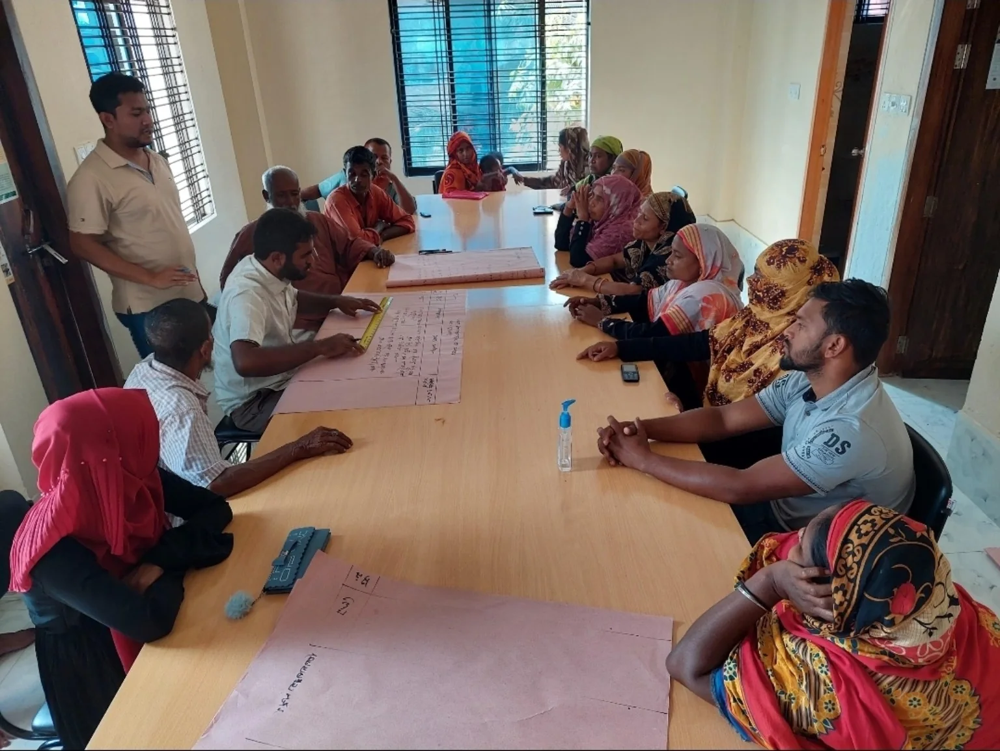
Discussion became a shared record for the plan.
Local knowledge was not treated as an anecdote beside the research. It became part of the evidence used to build the plan.
07 / FROM FIELDWORK TO LCAP
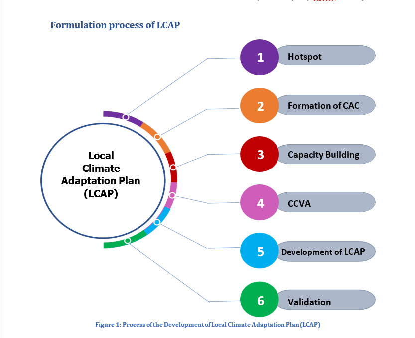
The process connected community engagement with formal adaptation planning.
I worked on both sides of this process: supporting the fieldwork and translating findings into the LCAP documents.
08 / THE DOCUMENT
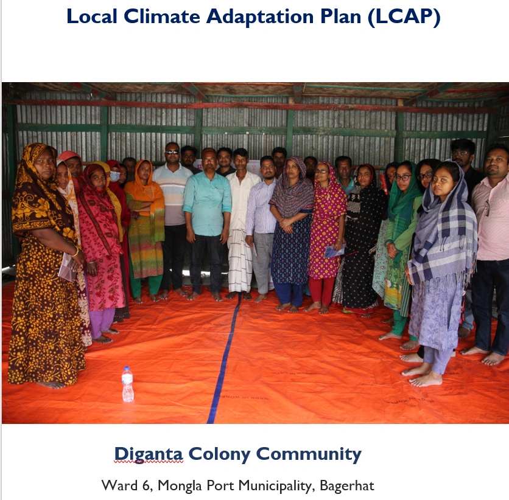
Diganta Colony Community
Ward 6, Mongla Port Municipality, Bagerhat
The final LCAP brought together community context, climate hazards, seasonal patterns, vulnerable sectors, local priorities and proposed adaptation measures.
It provided a structured record of how the community understood climate risk and what actions could address it.
Diganta Colony Community Adaptation Committee
FACILITATIONBRAC Urban Development Programme
DOCUMENTATION + EDITINGICCCAD CRMFT Project Team
SUPPORTLLA Team, Global Center on Adaptation
09 / TURN PRIORITIES INTO ACTIONS
For each proposed intervention, the LCAP considered anticipated outcomes, implementation challenges, responsible actors, maintenance, monitoring, beneficiaries and timelines.
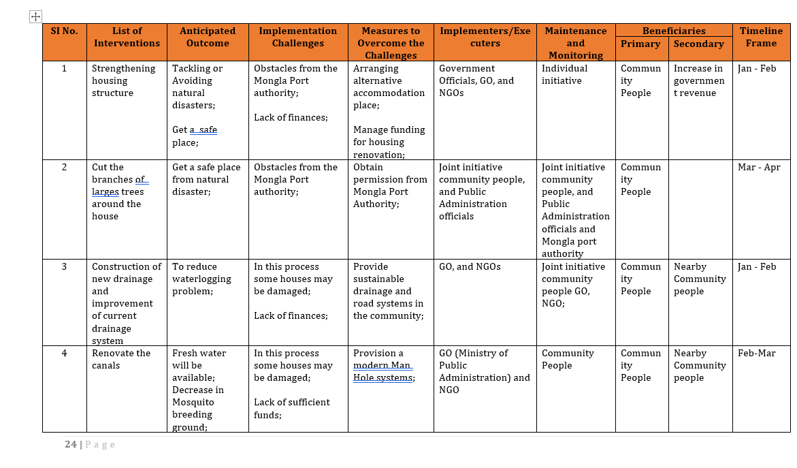
Strengthen housing structures and address finance, permissions and temporary accommodation.
Reduce risks from large branches around homes, with community and authority coordination.
Improve existing drainage and consider sustainable systems to reduce waterlogging.
Improve water availability and drainage while considering funding and maintenance.
The matrix presents proposed measures and implementation responsibilities recorded during community planning.
What should happen? Who will do it?
What could prevent it? How will it last?
10 / MY ROLE
Community consultation, participatory exercises, facilitation and documentation.
Literature review, methodology support, vulnerability assessment and synthesis of locally identified hazards and impacts.
Supporting community discussions around priorities, resources, risks and potential adaptation measures.
Contributing to the development process of 80 LCAPs, 36 WCAPs and 3 TCAPs, connecting community evidence with ward and town planning.
Training of Trainers, support to BRAC field teams, CAC engagement and wider capacity-building activities.
LCAPs, WCAPs, TCAPs, manuals, research outputs, reports, presentations, factsheets and project documentation.
My contribution moved across the research-to-planning chain.
Fieldwork → Analysis → Writing → Local adaptation plans11 / CAPACITY BUILDING
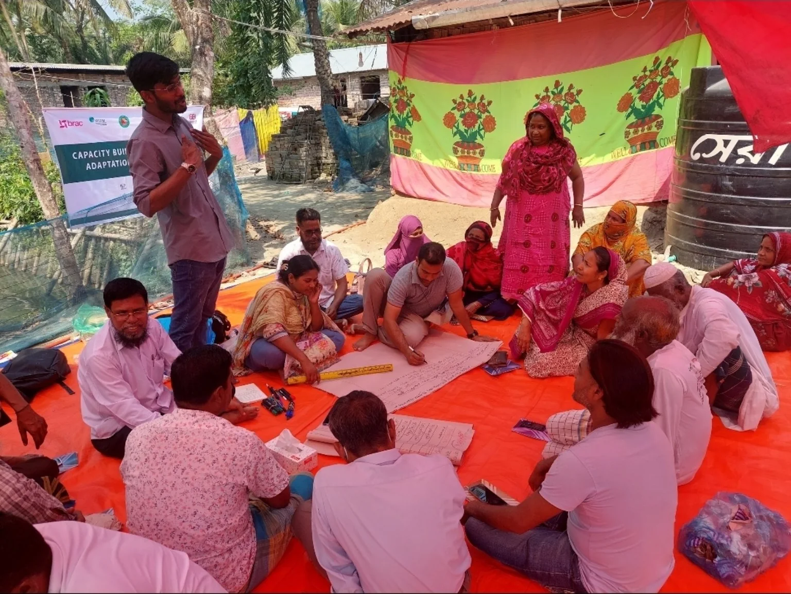
Working through adaptation priorities and planning tools together.
Producing a plan was one part of the work. Community committees and field teams also needed to understand how vulnerability assessment and adaptation planning worked.
Training and capacity building supported local participation in identifying risks, discussing responses and engaging with the plans.
The objective was to strengthen the ability of local actors to take part in the planning process itself.
12 / FIELD NOTES
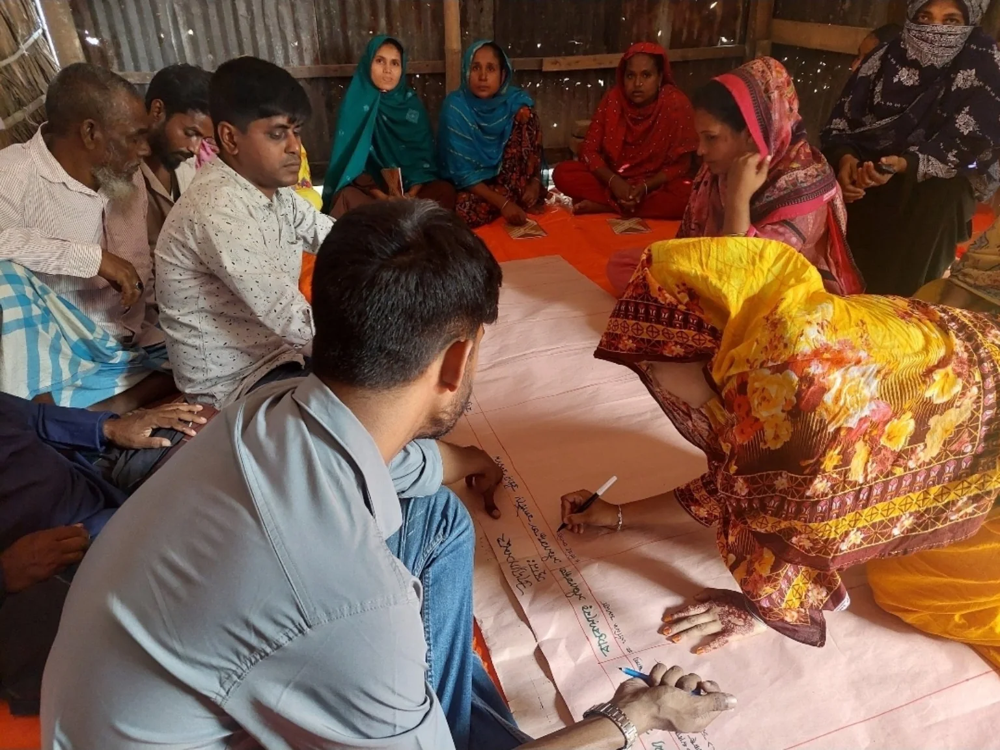
Local priorities were recorded during the discussion.
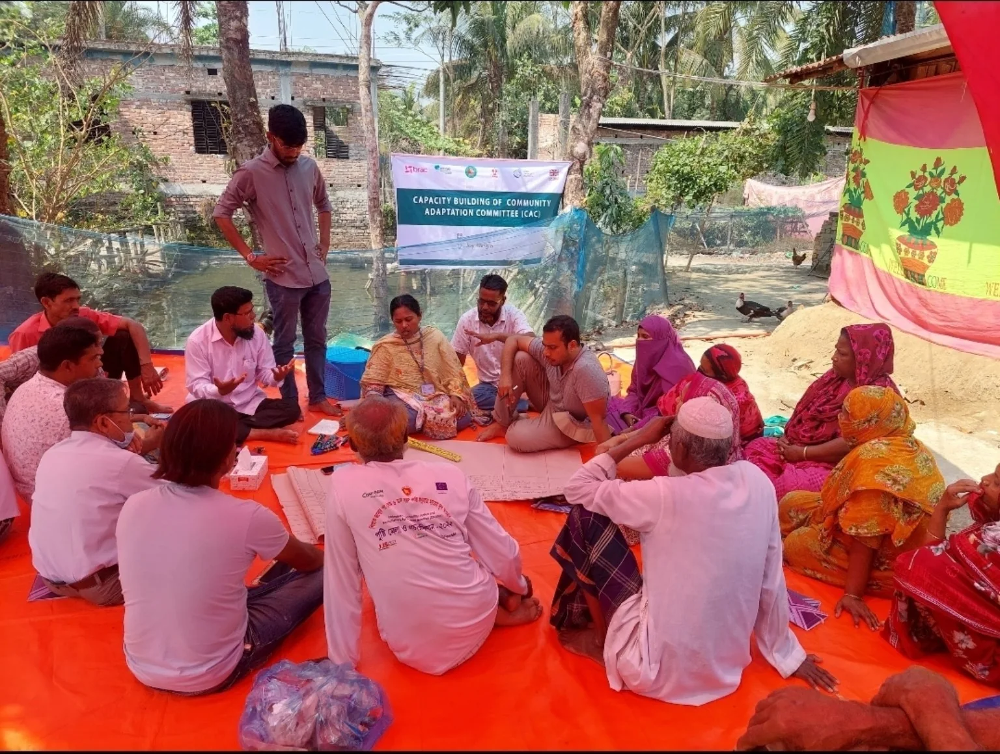
Participants worked through the evidence together.
Field photographs document the wider CRMFT process. The maps, graphics and report excerpts on this page are from the Diganta Colony LCAP.
13 / THE RESEARCH-TO-PLAN CHAIN
Community experience
Hazards, resources, vulnerability
Climate vulnerability
Community-defined needs
Local adaptation measures
Community and stakeholder review
Responsibilities and timelines for implementation
14 / WHAT THE WORK PRODUCED
Residents' experience of changing conditions was documented and made visible.
Hazards and impacts were connected to exposed sectors and adaptive capacity.
Priorities became proposed interventions, responsible actors and timelines.
The Diganta plan provides a community-level foundation for wider ward and town adaptation planning, and a reference for communicating local priorities to institutions and potential funders.
15 / PROJECT SNAPSHOT
16 / REFLECTION
Technical research remains essential. But communities already hold detailed knowledge of changing rainfall, salinity, waterlogging, livelihood stress and the limitations of existing services.
The role of research is to help make that knowledge visible, structure it, connect it with wider evidence and translate it into plans and decisions that institutions can act on.
Listen carefully. Make the evidence visible.
Build the plan together.